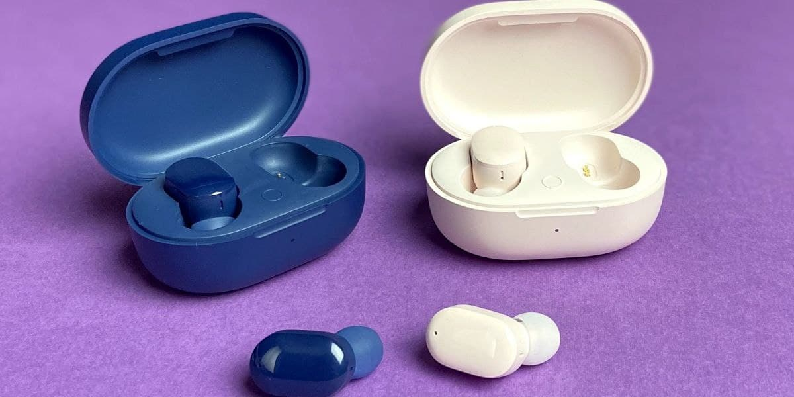

Топ-10 лучших беспроводных наушников 2022 года
Наушники - друзья наши меньшие, сопровождают нас повсюду и позволяют с комфортом для себя и окружающих наслаждаться искусством, аудиокнигами, общением и многим другим. Беспроводные имеют практичное преимущество над проводными: ничего не мешает, не цепляются и не путаются. По этой причине всё больше людей делает выбор в пользу Bluetooth гарнитур и скоро эпоха мемов про запутанные наушники канет в лету. В этой статье мы собрали лучшие беспроводные наушники актуальные для 2021 года.
Apple AirPods Max
AirPods Max это полноразмерные топовые наушники Apple с прозрачным режимом и системой активного шумоподавления (ANC), состоящей из восьми микрофонов. Амбушюры из сетчатой ткани идеально прилегают благодаря дужкам, которые фиксируются в нужном положении. В них есть пространственный звук, создающий эффект объемного звучания. Он превосходит формат «звук вокруг» и обеспечивает меньшее искажение. У них 9 микрофонов, два из которых для распознавания голоса, поэтому они будут отличной гарнитурой даже в ветреную погоду. Хватает на 20 часов при прослушивании композиций и просмотре видео. Звучат превосходно. Благодаря специально разработанному драйверу вы услышите все детали мелодии. Прекрасно подойдут для игр, прослушивания контента, долгих поездок и бесед.
Apple AirPods Pro
Первые беспроводные вакуумные наушники Эппл с хорошим микрофоном и ANC. Компактные, удобно сидят в ушах и подойдут для активности. Можно не боятся за безопасность, ведь они с защитой уровня IPX4. Выдерживают без подзарядки более 4,5 часов, а при разговоре до 3,5. Поддерживают протокол Qi. Их можно использовать примерно 1,5 часа, после пяти минут в зарядном футляре. Сзади на кейсе расположена кнопка для сопряжения. Спереди - светодиодный индикатор. Зелёный говорит о полной батареи или подключении, белый горит при первом сопряжении, а оранжевое мигание означает сброс настроек. У AirPods Pro чудесное звучание, которое понравятся всем, включая любителей тяжелой музыки.
Beats Powerbeats Pro
Beats Powerbeats - идеальный спутник в спортзале. У них правильная эргономика и маленький вес для физической активности. Крепко держатся во время тренировок благодаря возможности фиксации и насадкам нескольких размеров. Оснащены защитой от влаги и пота. Благодаря акустическому корпусу звучание мощное, чистое и с повышенной четкостью. А чип H1 позволяет осуществлять максимально комфортный контроль над прослушиванием. Они не хрипят и качество остается на высоте. Микрофон неплохой, так что их можно применять для созвонов. Автономность радует: держатся до 9 часов и 24 с чехлом. Зарядка кейса длится два часа. На каждом наушнике есть элементы управления, что особенно спасает в качалке - не придется отвлекаться, чтобы переключать треки.
Marshall Major IV
Культовые полноразмерки со звучанием премиум-класса. Вы получаете не только глубокие динамичные басы и широкий диапазон без шипения, но и студийный звук. Динамические драйверы обеспечивают плавные верхние и средние частоты. Они объемные, но плотно прилегают и компактно складываются. Емкой батареи хватает более чем на 80 часов. Доступна быстрая зарядка, которая за пятнадцать минут обеспечивает пятнадцать часов работы. Они придутся по вкусу геймерам, аудиофилам и всем кому не принципиален размер. Присутствует встроенный микрофон, поэтому Major IV можно пользоваться как гарнитурой.
Samsung Galaxy Buds Pro
Внутриканальные наушники с оригинальным дизайном, обеспечивающие невероятное погружение и звук. Владельцы Самсунг смогут настроить весь основной функционал с помощью приложения Galaxy Wearable. Есть достойный микрофон. При разговоре держат заряд 4 часа с включенным шумоподавлением и 5 без него. При воспроизведении видео и аудио заряда хватает на 8 часов с ANC и на 5 без. Обладают защитой IPX7 ( водонепроницаемые). Buds Pro получились весьма удачными. Они надежные, с высокими показателями автономности и интеллектуальной функцией ANC, которая дает возможность регулировать окружающий шум. Особая структура минимизирует контакт корпуса с ветром, чтобы внешние условия не мешали.
JBL TUNE T125BT
Обладают плавной элегантной конструкцией и отличной эргономикой. Качество басов делает приятными на слух все музыкальные жанры. Есть встроенный микрофон и шумоподавление. JBL TUNE T125BT имеют прекрасные показатели батареии. Время работы с кейсом 32 часа, а заряжается он всего 2. Они большие, поэтому для зала не подходят и в кармане носить не комфортно. Понравятся как требовательным, так и рядовым слушателям. Их можно применять для звонков, но на улице собеседника будет слышно плохо.
Xiaomi Mi Air 2S
Air 2S хорошие бюджетные беспроводные наушники с приятной конструкцией из белого пластика. У них изящный дизайн и удобная посадка. Для тренировок они конечно не сгодятся, но при энергичных движениях не выпадают. Сяоми за небольшую цену сумели создать классный функциональный продукт, который моментально подключается и неплохо звучит. С помощью двойного нажатия на сенсорную панель можно принимать и отклонять вызовы, регулировать громкость и ставить на паузу. Час питания позволяет работать пять часов без кейса и двадцать с ним, чего при активном использовании хватает на два дня. Есть сносный микрофон с шумоподавлением, поэтому созваниваться в них нормально. Они подходят для лайтовой музыки и подкастов на средней громкости. Рекомендую для повседневной рутины, не требующей высококачественного микрофона.
Xiaomi Redmi AirDots 3
Эта модель популярна как и AirDots 2. Новая версия сохранила плюсы предыдущей и усовершенствовала техническую часть. Они звучат гораздо чище в сравнении с прошлыми. В них добавили второй динамик и уменьшили задержку. Защита IPX4. Поддерживает версию Bluetooth 5.2, что гарантирует стабильное подключение. Они прослужат до 7 часов, а с кейсом до 30 без подзарядки. Полностью заряжаются около трех часов. Есть сенсорное управление проигрыванием. Redmi AirDots 3 созданы для любой музыки, благодаря хорошему звучанию и не хрипящим басам. Рекомендую тем, кому нужен простой и практичный девайс.
Encok W07
По форме W07 напоминают Аирподсы. Они очень компактные и вместе с кейсом весят 45 грамм. Звучание заметно выделяется в своем ценовом сегменте. Есть стереозвук и добротный бас. Технология цифровой отладки DSP создает впечатляющие эффекты живого звука, а технология ENC уменьшает шум. Защита IP55. Оснащены двумя микрофонами и функцией шумоподавления. Работают четыре часа, если случать аудио и шесть, если говорить по телефону. Футляр заряжается за 3 часа, наушники за 1,5. Благодаря шумоизоляции, чистым басам и высокой автономности модель для тех, кто ищет добротный продукт в данной ценовой категории для связи и музычки.
Baseus W04
Данные вкладыши относятся к бюджетному сегменту, но выдают достойные характеристики. Помимо стильного и элегантного внешнего вида они надежно сидят. Для такой цены тут превосходные басы и звук, для которого характерна чистота и насыщенность. Живут 5 часов без подзарядки и 300 в режиме ожидания. Полное питание занимает 1,5 часа проводным способом и 3 с QI. Присутствует микрофон, который подойдет для звонков в помещении. W04 выбор активных людей, которых сопровождает музыка везде. У них защита IP54 и спортивные занятия, прогулки под дождем или случайное попадание воды им не страшно. Они для тех, кто хочет получить достойный звук и функционал за небольшие деньги.
Итог
Мы представили топ беспроводных наушников в разных ценовых категориях, которые подойдут для разных целей. Теперь вы знаете какие выбрать именно вам. Изучить данные модели можно в блоге, а ознакомиться с отзывами у нас на сайте.
В интернет-магазине Skay.ua вы можете выбрать качественные беспроводные наушники c гарантией по хорошей цене.